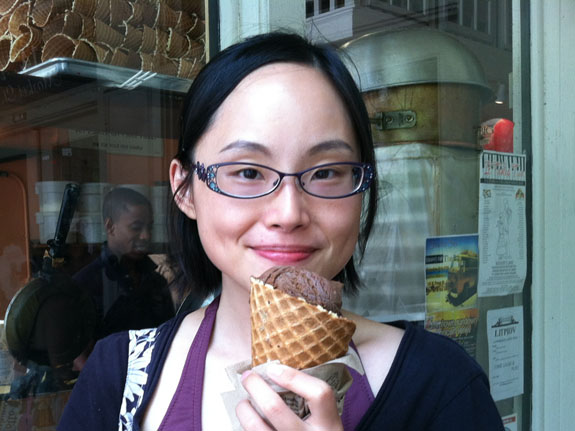
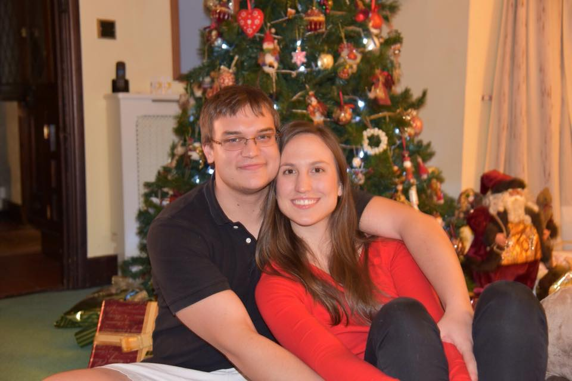

Video controls:
Play | Pause | Volume Up | Volume Down | Mute
ChienKuang and ShihHan
Invite You to Celebrate At their Wedding

Sunday, April 26
2015
Duke Chapel
401 Chapel Dr, Durham, NC 27708
Whitford hall, Duke Memorial UMC
504 West Chapel Hill Street, Durham, NC 27701
Our Story

Chien-Kuang (Cornelia) is from Taipei, Taiwan. With her passion in medical research, she graduated from medical school in Taiwan and came to Durham, North Carolina in 2012 as a graduate student to study cancer biology at Duke, where she met Sean almost immediately after her arrival. Outside of lab, Chien-Kuang sings in Duke Chapel Choir, and loves to walk and run. Her favorite composer is Bach and her favorite instrument is piano.
- Chien-Kuang's Story

Shih-Han is also from Taipei, Taiwan. He came to Durham on 2011 to study statistics and machine learning at Duke. He met Chien-Kuang in 2012 when she just came and helped her to settled down. Besides his research, Sean is an excellent table tennis players and has won many medals since college. He joined Duke Chapel Congregation on 2015.
- Sean's Story
Bridesmaids
-

Molly Matty It's my pleasure to introduce my bridesmaid of honor -- Ms. Molly Matty! Molly is in the same class with me in Duke Program in Genetics and Genomics. She is a creative and fun person, happy scientist (most of the time!), a runner, an expert in local and blue grass music, an enthusiastic teacher, and many more. She is the person taking care of me during the midst of wedding planning and giving me a lot of creative advice. Thanks Molly!
-

Eva Hum. Eva is also in the same class with me in graduate school. She is the very first person I talk to in my program, and my intuition is proved to be right -- she is super nice and also very understanding whenever I run to her. In addition to a happy scientist, Eva is also a good baker and a good cook, my favorite dish so far is Lumpia! And she will bake my wedding cake!
-

Melissa Keenan. Melissa is my lab buddy. I knew her since 2011 (the year when she got engaged with her lovely husband Sean -- who is also in our wedding party!) We share the same row in lab, support each other to feel better in day-to-day life in the middle of dark valley of graduate school (no kidding!). Well, I mean we love science, but in the scale of everyday life, frustration is always our accompany. That's why having a smart and nice person being with me during the journey is definitely one of the most wonderful things in the world. Our big day (April 26th) is also Melissa and her dog Liam's birthday!
-

Lynne Liao is a Biomedical Engineering major and Music minor at Duke University. Lynne and Chien-Kuang first met in the Duke Chapel Choir and sing together in the mezzo-soprano section. Lynne is the very first person who volunteered to help with our wedding - one year before the proposal. She is also the Vice President of the Duke Chapel Choir (2014-2015).
-

Erin Roesch - Erin is a loving Christian who truly devotes herself to helping other people. She is now working for StepUp Ministry in Raleigh, a non-profit dedicated to helping people overcome barriers to employment and find meaningful, life-giving work. Cornelia (Chien-Kuang) knew her via Sean's classmate, Henri, in Duke Math. Because of Erin's understanding, passion for life, and love towards people, it always brings peace and joy when we gather together. Erin lives in Durham with her husband, Henri, and their beloved cat, Amelia Louis.
-

Katie Walzer. Katie is also my lab buddy and my classmate in the program of Genetics of Genomics. I met Katie when we were assigned to present a paper in our class during my first year. I was totally freak out, but she is just smart, calm, nice and professional, the best presentation partner you can ever get. That makes my first English presentation mostly smooth so I didn't cry and go back to Taiwan afterwards. I am so happy when we rotate together in Chi lab and decide to join the same lab together. Now she is studying a very challenging but sexy (again, no kidding!) topic in the field of microbiology,
-

Lena Bloom, daughter of Rachael Bloom. Rachael entered Duke program of Genetics and Genomics in 2013. Although we are not in the same class, our lab was next to each other (there was even no wall in between!) and she is always one of the best person if you want to talk about science and life with someone kind-of faraway from you field. I simply couldn't stop myself follow all her photo with her daughter Lena on facebook -- that's why I asked Rachael if she can asked Lena if she wants to be my flower girl (I hope Lena says yes!) Lena just began her school year this fall.
Groomsmen
-

Henri Roesch - Henri is a fourth year PhD student studying differential geometry at Duke. He has known Shih-Han since they both began their programs in 2011 and he couldn't be more excited to see him marry such a wonderful woman! A native of South Africa, Henri lived in the UK for 13 years prior to coming to the US. He loves video games, biltong (the equivalent of South African beef jerky), good movies, and southern biscuits (Bojangles anyone?)
-

Nick Davis
-
Kaoru Irie
-
Sean Keenan
-

Michael Lindon
-

Richard Opoku-Nsiah
Information
Attire
Our wedding celebration will be festive and unique, though somewhat traditional. Feel free to sport your favorite suit or dress.
We do want to inform you that we will be inviting our guests to enjoy refreshments in an outdoor tent following the ceremony and before dinner. Field-friendly footwear may be helpful, as well as something that will be comfortable on a (hopefully breezy) summer evening in North Carolina.
Airport
The closest airport is Raleigh-Durham International Airport, which is about 35 minutes away from Duke campus by driving.
Parking
Our guests are welcomed to park behind the Duke Memorial UMC on Memorial St. A limited number of spaces reserved for handicap parking are in the Gregson Street parking lot.

Live Streaming
Youtube live stream link will be shared soon!
Hotel accommodations
Day's Inn
- About 10 minutes from Resurrection UMC.
Brookwood Inn
About 10 minutes from Resurrection UMC and accross from Duke Hospital. Henri stayed here when he first visited Duke two years ago.
Hampton Inn and Suites
- About 15 minutes from Resurrection UMC near Northgate Mall.
Things to do in the area
You will pleased to know that there is PLENTY to do in Durham! In terms of restaurants, our fine city was voted the "South's Tastiest Town" by Southern Living Magazine and the New York Times has featured it as a top dining destination. Below are a few of our most frequented restaurants.
The Durham Farmer's Market:
Open every Saturday during the summer form 8 AM to 12 PM, the Durham Farmer's Market has literally everything you can imagine: local honey, homemade muscadine wine (a NC specialty), fresh flowers, handmade jewelry, quilts and carved furniture. The Market would be a great place to grab breakfast the morning of Aug. 3!
Eno River:
Henri and I love to hike and wish we could do it more. We love Eno River State Park, which is only a 15 minute drive from campus. So far, we've hiked Cox Mountain trail, which winds around the banks of the river and crosses over a swinging bridge. The trail's a great way to see North Carolina's scenery and wildlife.
Sarah P. Duke Gardens:
Located on Duke's West Campus, this garden is kept year-round and is a must-see for anyone who loves flowers or simply a beatiful stroll outdoors. The grounds are divided into various themed gardens and a tiny shop stands in the middle selling (arguably over-priced, but delicious) ice cream.
Museum of Life and Science:
Sadly, Henri and I haven't been here yet, but we want to check it out! We hear they have a butterfly house and dino trail, which would be great for out-of-town guests with kids.
Contact us
For any questions, please email: seanchang.stat@gmail.com
Rsvp
Photos


{kind=link}
Registry
-
We really appreciate and expect nothing more than your presence and good wishes for our marriage. We also find ourselves in a unique situation, which we are both still students and will spend at least a couple years of our married life in a small room of an apartment complex. Thus, although we appreciate people express their love with gifts to us, it would actually be quite challenging for us since we are not capable of storing gifts.
-
 Society for the Prevention of Cruelty to Animals (SPCA) dedicates to creating a more humane community where every adoptable animal has a home.
Society for the Prevention of Cruelty to Animals (SPCA) dedicates to creating a more humane community where every adoptable animal has a home.
-
 StepUp Ministry is a community of diverse faiths that partners with adults and children in the shared goal of stable lives through jobs and life skills training.
StepUp Ministry is a community of diverse faiths that partners with adults and children in the shared goal of stable lives through jobs and life skills training.
-
 Durham Interfaith Hospitality Network addresses the immediate and ongoing needs of homeless families by helping families move toward residential stability and self-sufficiency.
Durham Interfaith Hospitality Network addresses the immediate and ongoing needs of homeless families by helping families move toward residential stability and self-sufficiency.
-
 Durham Nativity School provides a tuition-free, enriched learning environment
for middle school boys who have the ability and commitment to achieve,
but not the resources for a quality,
independent school education.
Durham Nativity School provides a tuition-free, enriched learning environment
for middle school boys who have the ability and commitment to achieve,
but not the resources for a quality,
independent school education.
As an alternative, we encourage you to bring a dish instead of a gift to our reception dinner to share. It will be wonderful if you could specify what dish to bring in RSVP. In the meanwhile, we feel very blessed to have many groups and people here in Research Triangle area that strive to make people's life better. So we have an idea of non-traditional wedding registry here -- if you wish, please consider to make a gift to a group or organizations that makes our community better. Following are a few examples of organizations that we really admire and feel thankful to.
Acknowledgement
-

We are very honored to have Duke Chapel Choir friends sing for us!
-

with Conductor Dr. Rodney Wynkoop
-
Pasters
-
Photographers